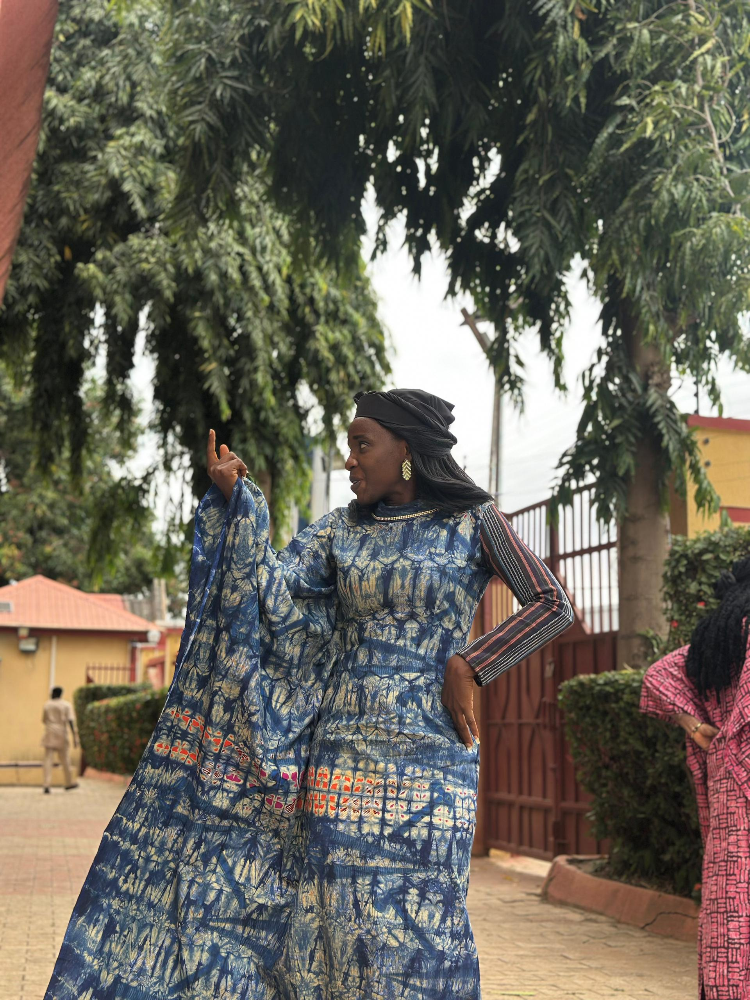
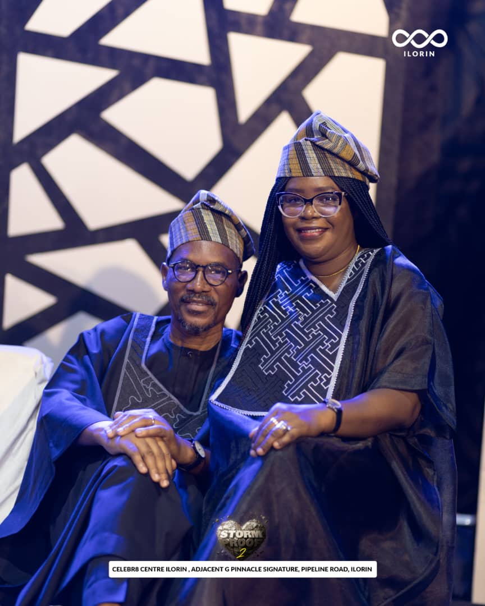
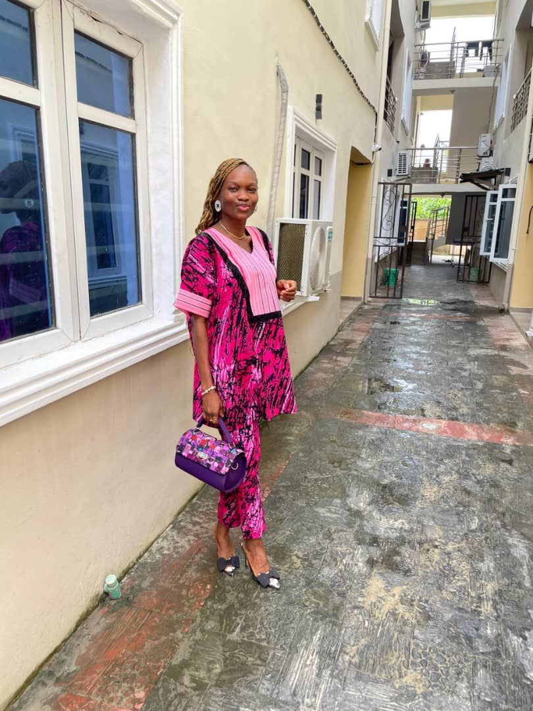
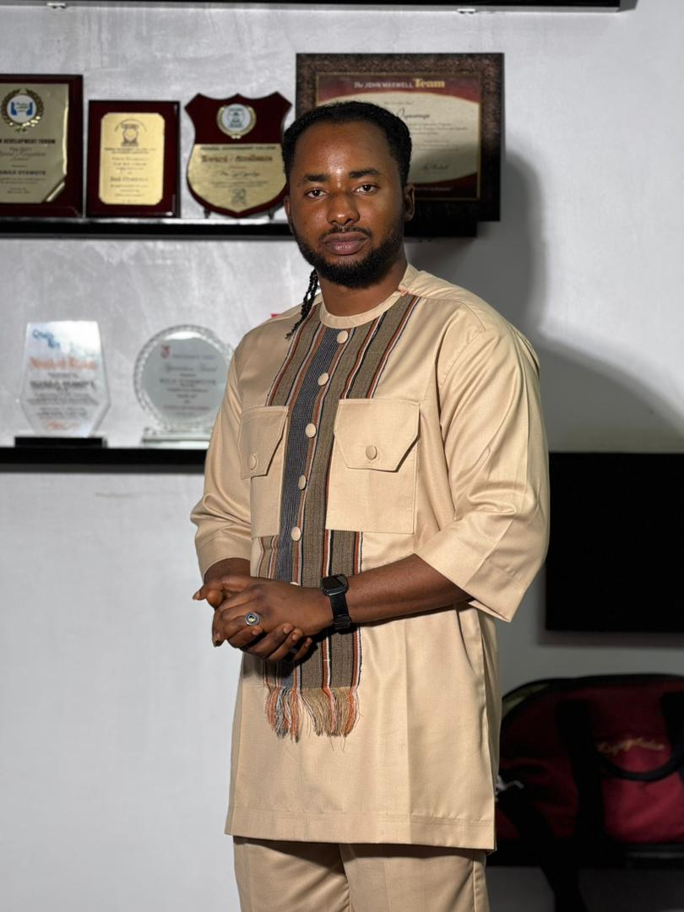

Gallery
A Glimpse of Our Work
Selected pieces from the Lois Apparel catalogue.






Luxury • Elegance • Craftsmanship
Lois Apparel by Bukola Olajubu creates refined, body-conscious pieces designed to elevate your everyday moments — from bespoke gowns and bridal looks to premium corporate and ready-to-wear outfits.
Each garment is crafted with precision, graceful movement, and timeless silhouettes that highlight your confidence and individuality.
Exclusively Tailored for you
What We Do
A fashion house dedicated to bespoke craftsmanship and refined ready-to-wear for real women.
One-of-a-kind designs tailored to your body, vision and event — including bridal gowns, aso-ebi, reception dresses and executive wear.
Shop selected pieces like Wonder Dresses, trousers, kaftans and joggers — all crafted with the signature Lois Apparel finishing.
Building the next generation of designers through structured training in pattern drafting, sewing techniques, garment construction and professional finishing.
Gallery
Selected pieces from the Lois Apparel catalogue.